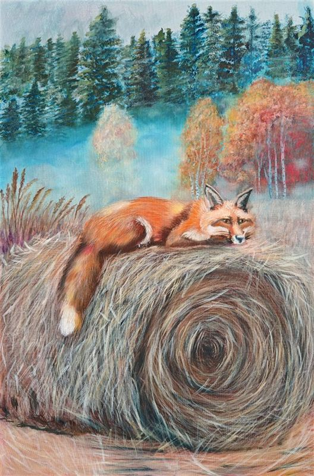
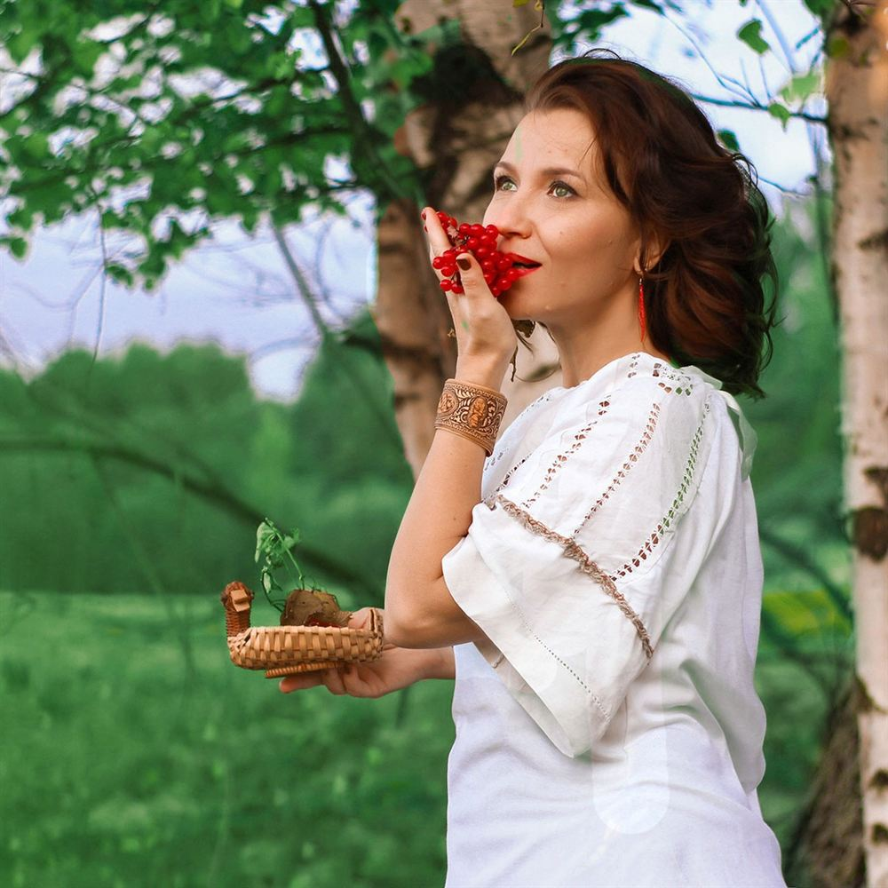
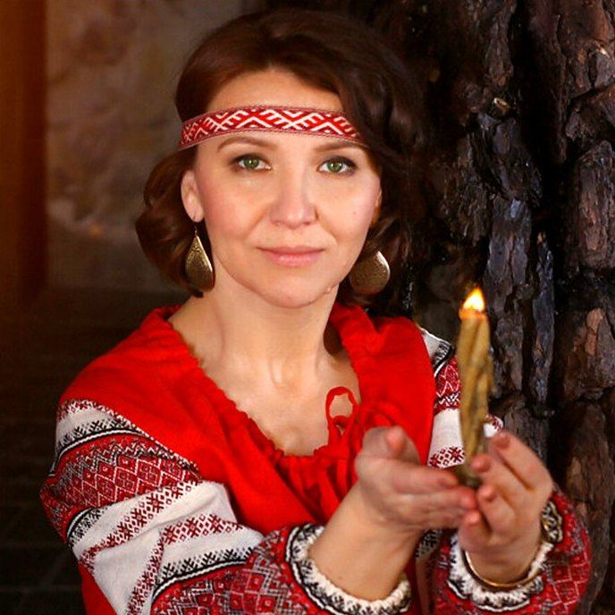
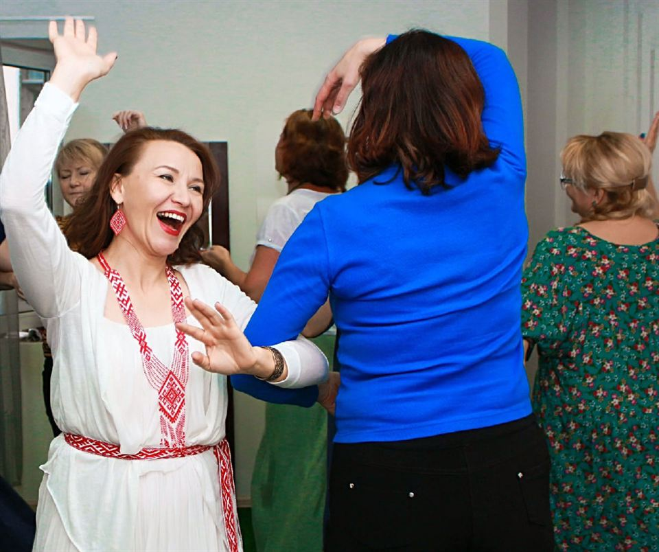
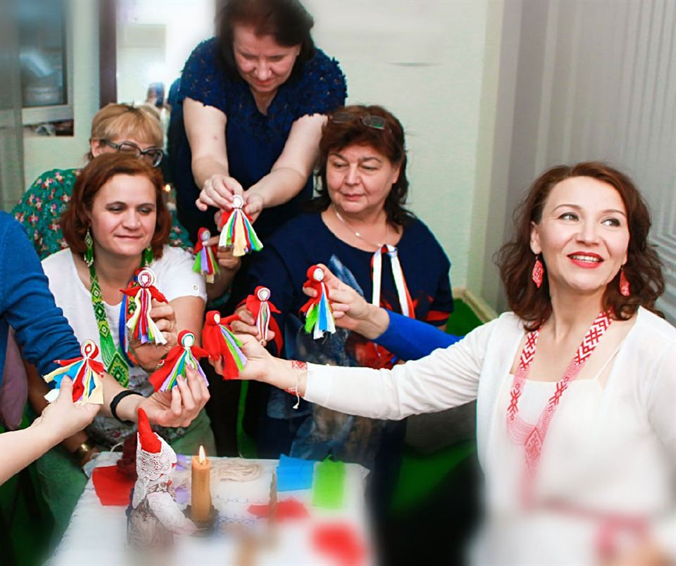
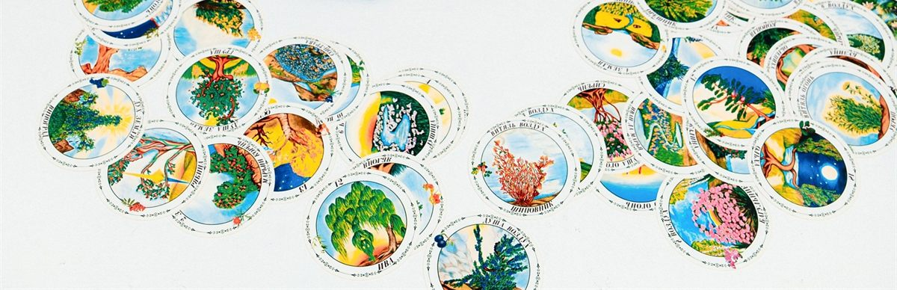
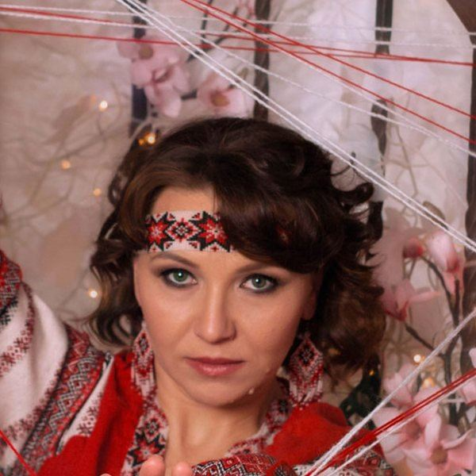

Живопись
Ресурсные картины
Мои авторские картины, созданные в сочетании с индивидуальными практиками. Готовые работы и картины на заказ.
ПодробнееПуть к себе. Знания. Творчество. Развитие.
Помогаю обрести внутреннюю опору, раскрыть свой потенциал и стать автором собственной жизни через психологию, творчество и мудрость традиций.


Я психолог-практик: консультирую с 1998 года. Родилась в солнечной Бурятии, живу в Петербурге, мама троих детей.
Мне знакомы непростые периоды жизни, и опыт выхода из них стал частью моей работы. Сегодня я соединяю психологию и славянские традиции: консультирую, веду обучение в онлайн-школе «Я — Развитие», создаю картины, свечи, обережных кукол и авторскую колоду «Родовое Таро», путешествую с клубом единомышленников.
Образовательное пространство Юлии Леус
Онлайн-школа, в которой с 2016 года прошло более 80 курсов. Здесь собраны мои программы о славянских традициях, родовой памяти, народных ремёслах и практиках заботы о себе. Уроки открываются в личном кабинете, начать можно в удобное время.

Школа живого наследия
Славянские традиции, народный календарь и родовая память. Живые эфиры, практикумы и клуб «Хранительница Рода».
Сообщество ЯРГА во ВКонтакте
Школа целителей
Для тех, кто хочет глубже изучить народные и авторские духовные практики и бережно применять их в жизни.
Сообщество ВЕРЕС во ВКонтактеТо, что я создаю своими руками и чему учу.

Мои авторские картины, созданные в сочетании с индивидуальными практиками. Готовые работы и картины на заказ.
Подробнее
Натуральные свечи с травами, обучение их созданию и практики работы со свечами.
Подробнее
Традиционные обережные куклы и обучающие программы по их созданию.
Подробнее
Моя авторская колода: круглые карты с деревьями и травами — 21 дерево и 56 трав. На курсе «Растительное родовое Таро» учу работать с ней.
Подробнее
Я собрала клуб путешественников: вместе мы едем туда, где природа, традиции и культурное наследие говорят сами за себя.
Это время побыть с собой, с природой и с единомышленниками. Среди маршрутов — автоэкспедиция на Аркаим и квест-прогулка по Петербургу.
Консультация — это время, чтобы спокойно разобраться в своей ситуации вместе с психологом и найти следующий шаг.
Откроется чат с Юлией во ВКонтакте: опишите свой вопрос, и она расскажет о формате и стоимости.

Читать полностью отзыв Анны Руденко-СоколовойЯ хочу сказать, что учиться в Школе Родовых Знаний — это было самое верное решение в моей жизни. Я не преувеличиваю. Та информация, которая даётся на занятиях, не просто интересная и так, для общего развития — эта информация даёт практические знания, которые помогают увидеть и понять, что и почему происходит в жизни то, что у каждого из нас происходит.
Читать полностью отзыв Надежды БаталовойДаже не верится, что за три дня можно столько пережить внутри, перемолоть, переоценить, очиститься! Три дня общения душами, на глубоком тонком уровне, который в обычной жизни не задействован. Мне отзывается каждое Юлино слово, каждый вопрос заставляет проснуться и посмотреть на себя и жизнь реально без привычного отрицания.
Читать полностью отзыв Ирины БатуринойЮлия, я благодарна вам за эти 4 дня общения в тренинге. И именно за результат! Это не просто какой-то объём «информации». Это чёткая картина того, что можно и нужно сделать для того, чтобы и самой стать счастливой, и оздоровить свой Род.
Читать полностью отзыв Любови НаугольныхДля меня марафон «Поцелуй кармы в коридоре затмений» стал осознанием того, что в нашей жизни мы можем не просто плыть по течению, а что-то менять, прилагая усилия. Коридор затмений проходила впервые, рада была оказаться в кругу единомышленниц, которые в любую минуту окажут поддержку.
Удобнее всего написать мне во ВКонтакте. Там же живут сообщества школы и творческих мастерских.